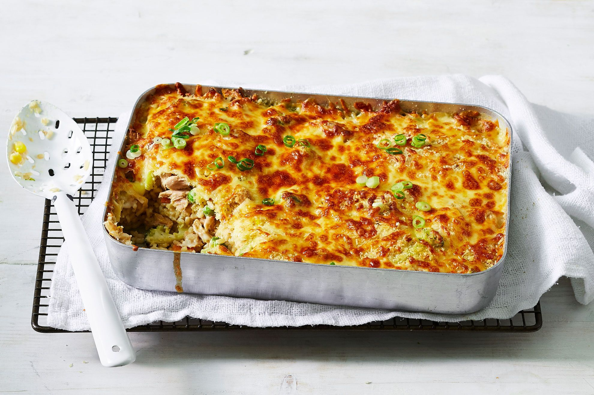

10-minute tuna mornay rice bake

tuna mornay rice cake that can be prepped in just 10 mins
Tuna Mornay is how you elevate canned tuna above a glum pantry staple or worse still,
a desperate meal eaten straight from the can! It's a tuna casserole pasta bake with a creamy sauce
, sweet pops of corn and crunchy topping, baked until golden and bubbly.
Simple to make, economical and oh-so-delish!
INGREDIENTS
- 425g can Coles Tuna In Springwater, drained, flaked
- 150g (1 cup) frozen mixed vegetables
- 490g jar bought bechamel sauce
- 80ml (1/3 cup) thickened cream
- 450g pkt microwave brown rice
- 2 green shallots
- 120g (1 1/2 cups) pre-grated 3 blend cheese (cheddar, mozzarella and parmesan)
- 25g (1/2 cup) panko breadcrumbs
- Extra virgin olive oil, to drizzle
STEPS
- Place the tuna, vegetables, bechamel and cream in a saucepan over medium-high heat. Cook, stirring occasionally, for 2 minutes or until warm.
- While the tuna mixture is cooking, place the rice in the microwave for 1 minute or until slightly warm.
- Chop the shallots then stir half through the tuna mixture.
- Preheat grill on high. Evenly spoon the rice into the base of a square 1.5L (6 cup) baking dish. Top with the tuna mixture. Sprinkle over the cheese and breadcrumbs. Drizzle over the oil. Grill for 2 minutes or until the top is golden. Serve sprinkled with remaining shallot.